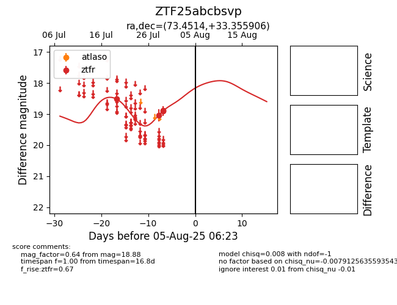

Target ZTF25abcbsvp at 2025-08-05 07:33, see:
FINK: fink-portal.org/ZTF25abcbsvp
Lasair: lasair-ztf.lsst.ac.uk/objects/ZTF25abcbsvp
ALeRCE: alerce.online/object/ZTF25abcbsvp
alt names
ZTF25abcbsvp (ztf,fink)
coordinates:
equatorial (ra, dec) = (73.4514,+33.35591)
galactic (l, b) = (170.0235,-6.56344)
photometry
last ztfr=18.88
4 ztfr detections
